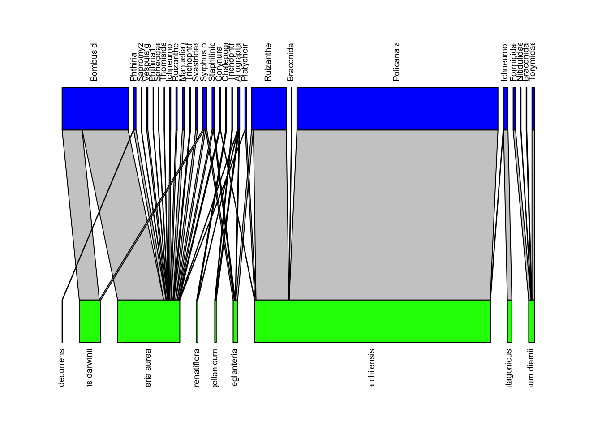
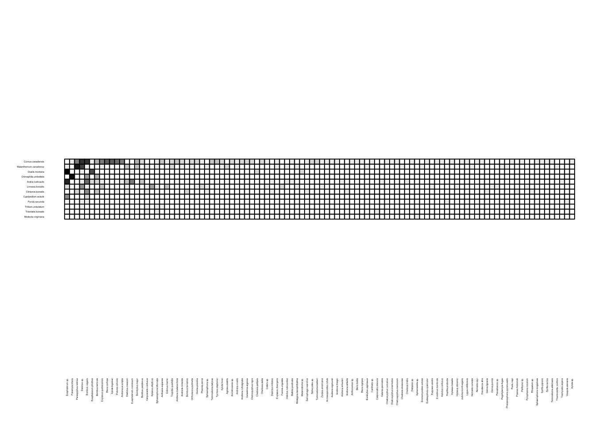
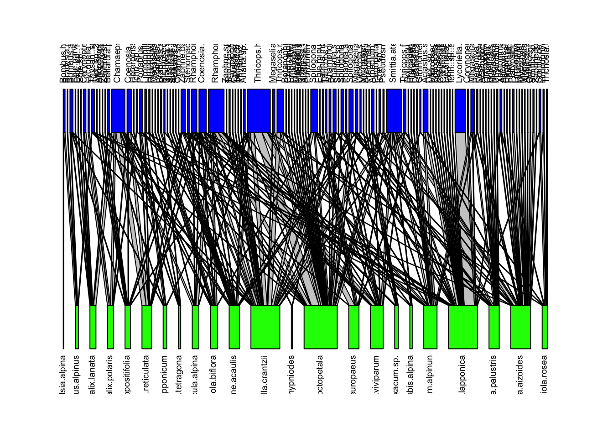
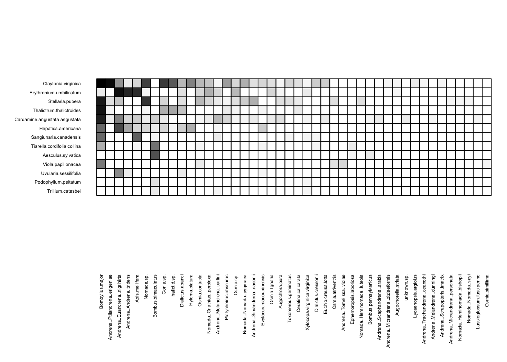
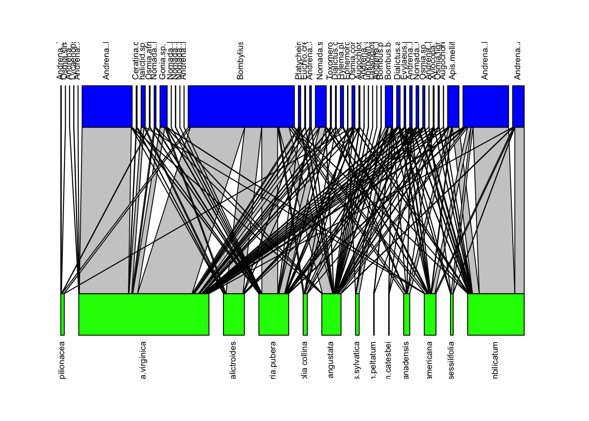
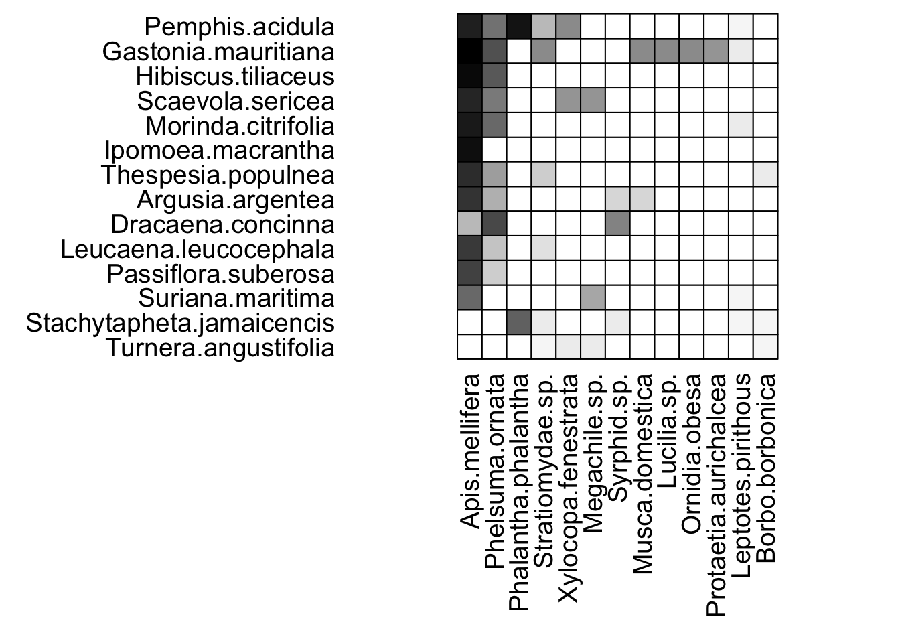

Network analysis
Beth & Nicole
Assigned Reading:
Dormann et al. 2009 DOI: 10.2174/1874213000902010007
Supplemental Reading:
Montoya et al. 2006 DOI: 10.1038/nature04927
Key Points
Anything that can be represented as an interaction matrix can be represented as a network (e.g., food webs, plant-pollinator networks, plant-fungal networks, microbe co-occurrence networks, facultative networks, host-parasite networks, etc.)
Networks are interesting because they are a way to organize and quantify community structure beyond simple species identities and numbers. Network structure is purportedly related to community robustness (the ability of the community to resist change after a disturbance), resilience (the ability of the community to recover after a disturbance), evolutionary history, ecosystem service provision, and biodiversity maintenance.
Columns and rows of interaction matrices represent interacting species (columns as pollinators and rows as plants, for example), and cell values represent either the presence/absence of an interaction between two species (binary networks) or the frequency of interactions between two species (weighted networks)
- Binary and weighted interaction networks are analyzed differently
Networks are often unipartite (all species in the same guild), bipartite (two guilds), or tripartite (three guilds). We focus today on bipartite networks.
There are many R packages to analyze and visualize networks including:
vegan(not strictly a network package, but required bybipartite)bipartiteigraphsnad3networkgraphviz(java)qgraph
For the example analysis we use vegan and bipartite.
Network metrics are used to quantify network structural properties (for example, a very simple one would be the average number of interactions per species). What network metric you pick depends on what question you’re trying to answer.
Some common network metrics that appear often in the literature are:
- Connectance: the number of observed interactions divided by the number of possible interactions
- has been proposed that connectance is a measure of complexity
- indices: ‘connectance’, ‘weighted connectance’
- Nestedness: a network in which the species with many interactions interact with the species with few interactions (and vice versa) is a nested network
- common in mutualistic networks
- indices: ‘nestedness’, ‘weighted nestedness’, ‘NODF’, ‘weighted NODF’
- Modularity: a network in which the species form discrete interaction compartments, with little interactions between species outside of each compartment, is a modular network
- common in antagonistic networks
- indices: ‘computeModules’, ‘modularity’ (in
igraph)
- Specialization – two potential meanings
- specialized networks = species have few interaction partners
- indices: ‘links per species’
- specialized networks = networks where species are specific in their interaction partner choice (not opportunistic)
- indices: ‘\(H_2\)’
- specialized networks = species have few interaction partners
Some common species level (node level) metrics that appear often in the literature are:
- Species degree: number of interaction partners
- indices: ‘species degree’
- Centrality - 2 kinds
- Closeness centrality: the sum of the number of shortest distances (i.e. number of interactions, also known as ‘path lengths’) between the species in question and all other species in the network
- indices: ‘closeness_w’
- Betweenness centrality: the sum of the number of pairs of species whose shortest path lengths are connected through the species in question
- indices: ‘betweenness_w’
- Closeness centrality: the sum of the number of shortest distances (i.e. number of interactions, also known as ‘path lengths’) between the species in question and all other species in the network
- Specialization (specificity): species level metric similar to ‘\(H_2\)’
- the deviation of observed interactions from opportunistic, abundance-based interactions
- takes into account interaction partner diversity, relative abundance of other possible interaction partners, and reciprocal specialization between interaction partners
- Index: ‘d’
Use null models to determine if observed network structure is significantly different from random network structure.
Use the z-score \((observed - mean(null)/sd(null))\) to calculate the statistical significance of observed network structure (more or less than two standard deviations away from the mean \(\rightarrow p < 0.05\))
Null models are common in community ecology in general (e.g., niche overlap, species-area relationship, species co-occurrence, phylogenetic diversity, etc.) so this null model approach is useful for ecologists in general
A common binary null model:
- ‘shuffle.web’
- shuffles cells around the interaction matrix, keeps nothing constant
Common weighted null models:
- ‘r2dtable’
- changes cell values while keeping row and column sums constant
- ‘vaznull’
- changes cell values while keeping connectance (number of links in the matrix) constant
- ‘swap.web’
- changes cell values while keeping both connectance and row/column sums constant
Choose null model wisely - how restrictive do you want to be?
Also use null models if you want to compare structural properties between networks.
All network metrics are affected by network size (number of rows and columns) and shape (ratio of rows:columns) so it is not really possible to reliably compare network metrics between networks of different sizes and shapes
Common solution is to calculate the z-score to standardize metrics first, then compare the z-scores of a metric between networks
That’s networks in a nutshell! Proceed at your own risk…
Analysis Example
In this analysis example, we’re going to use the bipartite R package to visualize networks and to generate null models for significance of different network patterns. We will be using datasets that are already included in the package. These are plant-pollinator interaction matrices (pollinators species as columns and plant species as rows).
Each dataset, or interaction matrix, is a summary of observed interactions between a pollinator species and a particular plant species in a specific country (or site). The number of these pairwise interactions is given by the value in each matrix cell. Each dataset was obtained in a different country, so the dataset/matrix and the network constructed from that will be named after its country of origin (or region).
# Clear environment
rm(list=ls())
# Load required packages for bipartite
library(permute)
library(lattice)
library(vegan)## This is vegan 2.4-4library(statnet.common)##
## Attaching package: 'statnet.common'## The following object is masked from 'package:base':
##
## orderlibrary(network)## network: Classes for Relational Data
## Version 1.13.0 created on 2015-08-31.
## copyright (c) 2005, Carter T. Butts, University of California-Irvine
## Mark S. Handcock, University of California -- Los Angeles
## David R. Hunter, Penn State University
## Martina Morris, University of Washington
## Skye Bender-deMoll, University of Washington
## For citation information, type citation("network").
## Type help("network-package") to get started.library(sna)## sna: Tools for Social Network Analysis
## Version 2.4 created on 2016-07-23.
## copyright (c) 2005, Carter T. Butts, University of California-Irvine
## For citation information, type citation("sna").
## Type help(package="sna") to get started.# Load main package
library(bipartite)## This is bipartite 2.08
## For latest changes see versionlog in ?"bipartite-package".
## For citation see: citation("bipartite").
## Have a nice time plotting and analysing two-mode networks.##
## Attaching package: 'bipartite'## The following object is masked from 'package:vegan':
##
## nullmodel# Read all the interaction network matrices into a list
webs <- list(Safariland, barrett1987, elberling1999,
memmott1999, motten1982, olesen2002aigrettes)
# Re-name the datasets according to the sites for each plant-pollinator network
webs.names <- c("Argentina", "Canada", "Sweden", "UK", "USA", "Azores")
names(webs) <- webs.names
# View data (interaction matrix, for generating a network, or a web)
lapply(webs, head, n = 2L) # Only display the first two rows in the dataset## $Argentina
## Policana albopilosa Bombus dahlbomii
## Aristotelia chilensis 673 0
## Alstroemeria aurea 0 154
## Ruizantheda mutabilis Trichophthalma amoena
## Aristotelia chilensis 110 0
## Alstroemeria aurea 0 0
## Syrphus octomaculatus Manuelia gayi
## Aristotelia chilensis 0 0
## Alstroemeria aurea 5 7
## Allograpta.Toxomerus Trichophthalma jaffueli
## Aristotelia chilensis 0 0
## Alstroemeria aurea 1 3
## Phthiria Platycheirus1 Sapromyza.Minettia
## Aristotelia chilensis 0 4 0
## Alstroemeria aurea 8 1 1
## Formicidae3 Nitidulidae Staphilinidae Ichneumonidae4
## Aristotelia chilensis 0 0 0 1
## Alstroemeria aurea 0 0 4 0
## Braconidae3 Chalepogenus caeruleus Vespula germanica
## Aristotelia chilensis 0 0 0
## Alstroemeria aurea 0 0 4
## Torymidae2 Phthiria1 Svastrides melanura Sphecidae
## Aristotelia chilensis 0 0 0 0
## Alstroemeria aurea 0 1 6 1
## Thomisidae Corynura prothysteres Ichneumonidae2
## Aristotelia chilensis 0 1 0
## Alstroemeria aurea 1 3 4
## Ruizantheda proxima Braconidae2
## Aristotelia chilensis 0 1
## Alstroemeria aurea 4 0
##
## $Canada
## Acmaeopsoides.rufula Agiotes.stabilis
## Aralia.nudicaulis 0 0
## Chimaphila.umbellata 0 0
## Ancistrocerus.sp. Andrena.melanochroa Andrena.miranda
## Aralia.nudicaulis 0 0 0
## Chimaphila.umbellata 0 0 0
## Andrena.nivalis Andrena.rufosignata Andrena.sigmundi
## Aralia.nudicaulis 0 0 0
## Chimaphila.umbellata 0 0 0
## Andrena.thaspii Andrena.wheeleri Andrena.wilkella
## Aralia.nudicaulis 0 1 0
## Chimaphila.umbellata 0 0 0
## Andrena.w.scripta Anthaxia.expansa Anthonomus.sp.
## Aralia.nudicaulis 1 0 0
## Chimaphila.umbellata 0 0 0
## Blera.badia Blera.confusa Blera.nigripes
## Aralia.nudicaulis 0 0 0
## Chimaphila.umbellata 0 0 0
## Bombus.perplexus Bombus.ternarius Bombus.terricola
## Aralia.nudicaulis 3 0 2
## Chimaphila.umbellata 0 0 4
## Bombus.vagans Bombylius.major Bombylius.pigmaeus
## Aralia.nudicaulis 8 0 0
## Chimaphila.umbellata 5 0 0
## Cantharis.sp. Carposcalis.confusus
## Aralia.nudicaulis 0 0
## Chimaphila.umbellata 0 0
## Carposcalis.obscura Cateres.pennatus
## Aralia.nudicaulis 0 1
## Chimaphila.umbellata 0 0
## Celastrina.argiolus Chalcosyrphus.curvarius
## Aralia.nudicaulis 0 0
## Chimaphila.umbellata 0 0
## Chalcosyrphus.inarmatus Chalcosyrphus.memorum
## Aralia.nudicaulis 0 0
## Chimaphila.umbellata 0 0
## Chalcosyrphus.nigra Cheilosia.pallipes
## Aralia.nudicaulis 0 0
## Chimaphila.umbellata 0 0
## Cheilosia.sialia Cheilosia.slossonae
## Aralia.nudicaulis 0 0
## Chimaphila.umbellata 0 0
## Cheilosia.tristis Crabro.sp. Dalopius.sp.
## Aralia.nudicaulis 1 0 0
## Chimaphila.umbellata 0 0 0
## Dialictus.cressoni Dialictus.imitatus Dialictus.sp.
## Aralia.nudicaulis 3 1 1
## Chimaphila.umbellata 0 0 0
## Eclimus.harrisi Ephemerella.sp. Eremomyioides.setosa
## Aralia.nudicaulis 0 0 0
## Chimaphila.umbellata 0 0 0
## Eudasyphora.cyanicolor Eupyses.vestris
## Aralia.nudicaulis 0 0
## Chimaphila.umbellata 0 0
## Eusphalerum.convexum Eusphalerum.phothos
## Aralia.nudicaulis 7 2
## Chimaphila.umbellata 0 0
## Eusphalerum.sp. Evodinus.monticola Evylaeus.divergens
## Aralia.nudicaulis 31 0 0
## Chimaphila.umbellata 0 0 0
## Evylaeus.quebecensis Fannia.ungulata
## Aralia.nudicaulis 1 0
## Chimaphila.umbellata 0 0
## Halictus.confusus Halictus.rubicundus
## Aralia.nudicaulis 0 1
## Chimaphila.umbellata 0 0
## Hoplitis.producta Hylaeus.basalis Hylaeus.ellipticus
## Aralia.nudicaulis 0 0 0
## Chimaphila.umbellata 0 0 0
## Hylaeus.stevensi Judolia.montivagans Lygus.refidorsus
## Aralia.nudicaulis 0 0 0
## Chimaphila.umbellata 0 0 0
## Mallota.posticata Melagyna.lasiophthalma
## Aralia.nudicaulis 1 0
## Chimaphila.umbellata 0 0
## Melanostoma.sp. Nomada.cuneata Nomada.sayi
## Aralia.nudicaulis 0 0 0
## Chimaphila.umbellata 0 0 0
## Orsodacne.atra Orthoneura.pulchella Osmia.lignaria
## Aralia.nudicaulis 0 0 0
## Chimaphila.umbellata 0 0 0
## Osmia.proxima Osmia.pumila Paramyia.nitens
## Aralia.nudicaulis 0 0 0
## Chimaphila.umbellata 0 0 61
## Parasyrphus.relictus Passaloecus.sp.
## Aralia.nudicaulis 0 0
## Chimaphila.umbellata 0 0
## Pegohylemyia.fugax Phalaenophana.pyramusalis
## Aralia.nudicaulis 0 0
## Chimaphila.umbellata 0 0
## Phaonia.serva Pidonia.ruficolis Pieris.napi
## Aralia.nudicaulis 0 0 0
## Chimaphila.umbellata 0 0 0
## Poanes.hobomok Psithyrus.sp. Pyrophaena.rosarum
## Aralia.nudicaulis 0 0 0
## Chimaphila.umbellata 0 0 0
## Rhopalum.sp. Sarcophaga.nearctica
## Aralia.nudicaulis 0 0
## Chimaphila.umbellata 0 0
## Sphaerophoria.bifurcata Sphaerophoria.longipilosa
## Aralia.nudicaulis 0 0
## Chimaphila.umbellata 0 0
## Sphaerophoria.sp. Sphecodes.sp. Syritta.pipiens
## Aralia.nudicaulis 0 0 0
## Chimaphila.umbellata 0 0 0
## Syritta.rectus Temnostoma.alternans
## Aralia.nudicaulis 0 0
## Chimaphila.umbellata 0 0
## Temnostoma.balyras Temnostoma.barberi
## Aralia.nudicaulis 0 0
## Chimaphila.umbellata 0 0
## Thamnotettix.confinis Trachysida.aspera
## Aralia.nudicaulis 0 1
## Chimaphila.umbellata 0 0
## Tropidia.quadrata Tychius.stephensi Vespula.arenaria
## Aralia.nudicaulis 0 0 0
## Chimaphila.umbellata 0 0 0
## Xylota.bigelowi Xylota.hinei Xylota.sp.
## Aralia.nudicaulis 0 0 0
## Chimaphila.umbellata 0 0 0
## Zeraea.americana
## Aralia.nudicaulis 0
## Chimaphila.umbellata 0
##
## $Sweden
## Phytomyza.aquilonia Alliopsis.glacialis
## Arabis.alpina 0 0
## Astragalus.alpinus 0 0
## Botanophilia.bidens Delai.piliventris Egle.minuta
## Arabis.alpina 0 0 0
## Astragalus.alpinus 0 0 0
## Egle.parva Egle.sp. Paradelia.sp. Pegomya.haemorrhoum
## Arabis.alpina 0 0 0 0
## Astragalus.alpinus 0 0 0 0
## Pegomya.sp. Pegoplata.aestiva Dipt..sp. Dipt..sp..1
## Arabis.alpina 0 1 0 0
## Astragalus.alpinus 0 0 0 0
## Dipt..sp..2 Zaphne.barbiventris Zaphne.frontata
## Arabis.alpina 0 0 0
## Astragalus.alpinus 0 0 0
## Zaphne.sp. Zaphne.sp..1 Bellardia.pubicornis
## Arabis.alpina 0 0 0
## Astragalus.alpinus 0 0 0
## Dasineura.sp. Acamptocladius.submontanus
## Arabis.alpina 0 0
## Astragalus.alpinus 0 0
## Corynoneura.scutella Heterotrissocladius.subpilosus
## Arabis.alpina 0 0
## Astragalus.alpinus 0 0
## Limnophyes.brachytomus Limnophyes.natalensis
## Arabis.alpina 0 0
## Astragalus.alpinus 0 0
## Limnophyes.ninae Limnophyes.schnelli
## Arabis.alpina 0 0
## Astragalus.alpinus 0 0
## Micropsectra.radialis Micropsectra.sp.
## Arabis.alpina 0 0
## Astragalus.alpinus 0 0
## Micropsectra.sp..1 Oliveridia.tricornis
## Arabis.alpina 0 0
## Astragalus.alpinus 0 0
## Pseudosmittia.oxoniana Smittia.betuletorum
## Arabis.alpina 0 0
## Astragalus.alpinus 0 0
## Smittia.aterrima Smittia.sp. Smittia.sp..1
## Arabis.alpina 1 0 0
## Astragalus.alpinus 0 0 0
## Chloropinae.sp. Dolichopus.plumipes Rhaphium.crassipes
## Arabis.alpina 0 0 0
## Astragalus.alpinus 0 0 0
## Empis.lucida Rhamphomyia.aethiops
## Arabis.alpina 0 0
## Astragalus.alpinus 0 0
## Rhamphomyia.obscuripennis Rhamphomyia.morio
## Arabis.alpina 0 1
## Astragalus.alpinus 0 0
## Rhamphomyia.reflexa Fannia.mollissima
## Arabis.alpina 0 0
## Astragalus.alpinus 0 0
## Platypalpus.nigritarsis Phyllolabis.macroura
## Arabis.alpina 0 0
## Astragalus.alpinus 0 0
## Coenosia.atritibia Coenosia.octopunctata
## Arabis.alpina 0 0
## Astragalus.alpinus 0 0
## Phaonia.alpicola Phaonia.lugubris
## Arabis.alpina 0 0
## Astragalus.alpinus 0 0
## Phaonia.subfuscinereis Spilogona.alpica
## Arabis.alpina 0 0
## Astragalus.alpinus 0 0
## Spilogona.megastoma Spilogona.nitidicauda
## Arabis.alpina 0 0
## Astragalus.alpinus 0 0
## Spilogona.triangulifera Thricops.cunctans
## Arabis.alpina 0 0
## Astragalus.alpinus 0 0
## Thricops.furcatus Thricops.hirtulus
## Arabis.alpina 0 0
## Astragalus.alpinus 0 0
## Thricops.nigritellus Thricops.rostratus Boletina.sp.
## Arabis.alpina 0 1 0
## Astragalus.alpinus 0 0 0
## Mycomya.fuscata Megaselia.cirriventris Megaselia.coci
## Arabis.alpina 0 0 0
## Astragalus.alpinus 0 0 0
## Megaselia.digitalis Megaselia.diversa
## Arabis.alpina 0 0
## Astragalus.alpinus 0 0
## Megaselia.girandii Megaselia.groenlandica
## Arabis.alpina 0 0
## Astragalus.alpinus 0 0
## Megaselia.pleuralis Megaselia.sordida Megaselia.sp.
## Arabis.alpina 0 0 0
## Astragalus.alpinus 0 0 0
## Parapiophila.vulgaris Chamaepsila.morio
## Arabis.alpina 0 0
## Astragalus.alpinus 0 0
## Gimnomera.dorsala Bradysia.girandii Bradysia.sp.
## Arabis.alpina 0 0 0
## Astragalus.alpinus 0 1 0
## Bradysia.sp..1 Bradysia.sp..2 Corynoptera.refrigerata
## Arabis.alpina 0 0 0
## Astragalus.alpinus 0 0 0
## Corynoptera.sp. Corynoptera.sp..1 Lycoriella.curvispina
## Arabis.alpina 0 0 0
## Astragalus.alpinus 0 0 0
## Lycoriella.freyi Lycoriella.sp. Lycoriella.sp..1
## Arabis.alpina 0 0 0
## Astragalus.alpinus 0 0 0
## Trichosia.truncata Allophorocera.lapponica Podabrus.sp.
## Arabis.alpina 0 0 0
## Astragalus.alpinus 0 0 0
## Arpedium.sp. Bombus.alpinus Bombus.hyperboreus
## Arabis.alpina 0 0 0
## Astragalus.alpinus 0 1 2
## Alysiinae.sp. Alysiinae.sp..1 Alysiinae.sp..2
## Arabis.alpina 0 0 0
## Astragalus.alpinus 0 0 0
## Alysiinae.sp..3 Alysiinae.sp..4 Cotesia.sp.
## Arabis.alpina 0 0 0
## Astragalus.alpinus 0 0 0
## Tetrastichinae.sp. Aclastus.sp. Aclastus.sp..1
## Arabis.alpina 0 0 0
## Astragalus.alpinus 0 0 0
## Orthocentrinae.sp. Phygadenon.sp. Porizontini.sp.
## Arabis.alpina 0 0 0
## Astragalus.alpinus 0 0 0
## Ichn..sp. Ichn..sp..1 Ichn..sp..2 Ichn..sp..3
## Arabis.alpina 0 0 0 0
## Astragalus.alpinus 0 0 0 0
## Stenomacrus.sp. Platygaster.sp. Pteromalidae.sp.
## Arabis.alpina 0 0 0
## Astragalus.alpinus 0 0 0
## Pteromalidae.sp..1 Xestommaster.sp. Cidaria.sp.
## Arabis.alpina 0 0 0
## Astragalus.alpinus 0 0 0
## Urbicola.sp. Anarta.sp. Thysan..sp. Limnophilus.sp.
## Arabis.alpina 0 0 0 0
## Astragalus.alpinus 0 0 1 0
##
## $UK
## Coleoptera.spec1 Coleoptera.spec2 Coleoptera.spec3
## Agrimonium.eupatorium 0 0 0
## Leontodon.autumnalis 0 0 0
## Coleoptera.spec4 Coleoptera.spec5 Coleoptera.spec6
## Agrimonium.eupatorium 0 0 0
## Leontodon.autumnalis 0 0 0
## Coleoptera.spec7 Cantharidae.spec1
## Agrimonium.eupatorium 0 0
## Leontodon.autumnalis 2 0
## Curculionidae.spec1 Diptera.spec1 Diptera.spec2
## Agrimonium.eupatorium 0 0 0
## Leontodon.autumnalis 0 0 0
## Diptera.spec3 Diptera.spec4 Conipidae.spec1
## Agrimonium.eupatorium 0 0 0
## Leontodon.autumnalis 0 0 0
## Diptera.spec5 Diptera.spec6 Scatophaga.stercoraria
## Agrimonium.eupatorium 0 0 0
## Leontodon.autumnalis 0 0 0
## Diptera.spec7 Diptera.spec8 Diptera.spec9
## Agrimonium.eupatorium 0 0 0
## Leontodon.autumnalis 0 0 0
## Diptera.spec10 Diptera.spec11 Diptera.spec12
## Agrimonium.eupatorium 0 0 0
## Leontodon.autumnalis 1 0 1
## Diptera.spec13 Diptera.spec14 Diptera.spec15
## Agrimonium.eupatorium 0 0 0
## Leontodon.autumnalis 0 0 0
## Diptera.spec16 Diptera.spec17 Diptera.spec18
## Agrimonium.eupatorium 0 0 0
## Leontodon.autumnalis 0 2 0
## Diptera.spec19 Eriothrix.rufomaculata Diptera.spec20
## Agrimonium.eupatorium 0 1 0
## Leontodon.autumnalis 0 1 0
## Diptera.spec21 Diptera.spec22 Diptera.spec23
## Agrimonium.eupatorium 0 1 1
## Leontodon.autumnalis 0 20 0
## Diptera.spec24 Diptera.spec25 Tephretidae.spec1
## Agrimonium.eupatorium 0 0 0
## Leontodon.autumnalis 0 0 0
## Diptera.spec26 Diptera.spec27 Chrysotoxum.bicinctum
## Agrimonium.eupatorium 0 0 0
## Leontodon.autumnalis 0 0 0
## Episyrphus.arbustorum Episyrphus.balteatus
## Agrimonium.eupatorium 0 2
## Leontodon.autumnalis 1 0
## Eristalis.pertinax Eristalis.tenax
## Agrimonium.eupatorium 0 0
## Leontodon.autumnalis 0 1
## Helophilus.pendulus Helophilus.trivittatus
## Agrimonium.eupatorium 0 0
## Leontodon.autumnalis 0 0
## Melanostoma.mellinum Melanostoma.scalare
## Agrimonium.eupatorium 1 0
## Leontodon.autumnalis 0 0
## Meliscaeva.auricollis Metasyrphus.corollae
## Agrimonium.eupatorium 0 1
## Leontodon.autumnalis 0 1
## Platycheirus.albimanus Platycheirus.clypeatus
## Agrimonium.eupatorium 0 2
## Leontodon.autumnalis 0 0
## Platycheirus.scutatus Rhingia.campestris
## Agrimonium.eupatorium 0 0
## Leontodon.autumnalis 0 0
## Scaeva.pyrastri Sphaerophoria.scripta
## Agrimonium.eupatorium 0 2
## Leontodon.autumnalis 0 16
## Syritta.pipiens Syrphus.ribesii Syrphus.vitripennis
## Agrimonium.eupatorium 0 0 0
## Leontodon.autumnalis 1 0 0
## Xanthogramma.pedissequum Bombus.lapidarius
## Agrimonium.eupatorium 0 0
## Leontodon.autumnalis 0 0
## Bombus.muscorum Bombus.pascuorum Bombus.terrestris
## Agrimonium.eupatorium 0 0 0
## Leontodon.autumnalis 0 0 0
## Psithyrus.spec1 Apis.mellifera Parasitica
## Agrimonium.eupatorium 0 0 0
## Leontodon.autumnalis 0 0 0
## Formicidae.spec1 Symphyta.spec1 Symphyta.spec2
## Agrimonium.eupatorium 0 0 0
## Leontodon.autumnalis 0 0 0
## solitary.bees Polyommatus.icarus Pyonia.tithonus
## Agrimonium.eupatorium 0 0 0
## Leontodon.autumnalis 7 0 0
## Pieris.brassicae Incurvariidae.spec1 Maniola.jurtina
## Agrimonium.eupatorium 0 0 0
## Leontodon.autumnalis 1 0 0
## Thymelicus.sylvestris Aglais.urticae
## Agrimonium.eupatorium 0 0
## Leontodon.autumnalis 0 0
##
## $USA
## Andrena..Scaphandrena..arabis
## Hepatica.americana 0
## Erythronium.umbilicatum 0
## Andrena..Melandrena..carlini
## Hepatica.americana 1
## Erythronium.umbilicatum 4
## Andrena..Trachandrena..ceanothi
## Hepatica.americana 0
## Erythronium.umbilicatum 0
## Andrena..Melandrena..dunningi
## Hepatica.americana 0
## Erythronium.umbilicatum 0
## Andrena..Ptilandrena..erigeniae
## Hepatica.americana 0
## Erythronium.umbilicatum 0
## Andrena..Scrapopteris..imatrix
## Hepatica.americana 0
## Erythronium.umbilicatum 0
## Andrena..Simandrena..nasonii
## Hepatica.americana 0
## Erythronium.umbilicatum 0
## Andrena..Euandrena..nigrihirta
## Hepatica.americana 27
## Erythronium.umbilicatum 273
## Andrena..Micrandrena..personata
## Hepatica.americana 0
## Erythronium.umbilicatum 0
## Andrena..Andrena..tridens
## Hepatica.americana 9
## Erythronium.umbilicatum 72
## Andrena..Tomelissa..violae
## Hepatica.americana 0
## Erythronium.umbilicatum 0
## Andrena..Micrandrena..ziziaeformis
## Hepatica.americana 0
## Erythronium.umbilicatum 0
## Ceratina.calcarata Ephemoropsis.laboriosa
## Hepatica.americana 0 0
## Erythronium.umbilicatum 0 0
## Nomada..Heminomada..bishopii
## Hepatica.americana 0
## Erythronium.umbilicatum 0
## Nomada..Heminomada..luteola
## Hepatica.americana 0
## Erythronium.umbilicatum 0
## Nomada..Gnathias..perplexa Nomada..Nomada..pygmaea
## Hepatica.americana 0 0
## Erythronium.umbilicatum 8 0
## Nomada..Nomada..sayi Nomada.sp.
## Hepatica.americana 0 4
## Erythronium.umbilicatum 0 1
## Xylocopa.virginica.virginica Apis.mellifera
## Hepatica.americana 0 4
## Erythronium.umbilicatum 2 52
## Bombus.bimaculatus Bombus.pennsylvanicus
## Hepatica.americana 2 0
## Erythronium.umbilicatum 0 0
## Augochlora.pura Augochorella.striata
## Hepatica.americana 0 0
## Erythronium.umbilicatum 1 1
## Dialictus.abanci Dialictus.cressonii
## Hepatica.americana 5 0
## Erythronium.umbilicatum 3 0
## Evylaeus.macoupinensis Lassioglossum.fuscipenne
## Hepatica.americana 5 0
## Erythronium.umbilicatum 0 0
## halictid.sp. Osmia.atriventris Osmia.conjucta
## Hepatica.americana 1 0 0
## Erythronium.umbilicatum 0 0 4
## Osmia.lignaria Osmia.simillima Osmia.sp.
## Hepatica.americana 0 0 0
## Erythronium.umbilicatum 4 0 7
## Hylema.platura Bombylius.major
## Hepatica.americana 8 20
## Erythronium.umbilicatum 0 2
## Platycheirus.obscurus Toxomerous.geminatus
## Hepatica.americana 0 0
## Erythronium.umbilicatum 0 0
## Gonia.sp. unknown.sp. Lycaenopsis.argiolus
## Hepatica.americana 4 0 0
## Erythronium.umbilicatum 0 0 0
## Euchlo.creusa.lotta
## Hepatica.americana 0
## Erythronium.umbilicatum 0
##
## $Azores
## Phelsuma.ornata Phalantha.phalantha Stratiomydae.sp.
## Gastonia.mauritiana 30 0 16
## Dracaena.concinna 33 0 0
## Xylocopa.fenestrata Megachile.sp.
## Gastonia.mauritiana 0 0
## Dracaena.concinna 0 0
## Protaetia.aurichalcea Leptotes.pirithous
## Gastonia.mauritiana 15 2
## Dracaena.concinna 0 0
## Borbo.borbonica Apis.mellifera Musca.domestica
## Gastonia.mauritiana 0 149 16
## Dracaena.concinna 0 11 0
## Syrphid.sp. Lucilia.sp. Ornidia.obesa
## Gastonia.mauritiana 0 16 16
## Dracaena.concinna 17 0 0As you can see, these are all quantitative or weighted networks (cells contain values ranging from \(0\) to any whole number \(n\), as supposed to just \(0\) and \(1\), as in binary networks).
Visualizing networks
We can visualize these networks using the visweb() and plotweb() functions in the bipartite R package. For the viswebs, the plants are in rows and the pollinators are in columns. For the plotwebs, the plant species are colored in green and the pollinators are in blue.
# Visualize the observed networks from the datasets
visweb(webs$Argentina)
plotweb(webs$Argentina, text.rot=90, col.low = "green", col.high = "blue")
visweb(webs$Canada)
plotweb(webs$Canada, text.rot=90, col.low = "green", col.high = "blue")
visweb(webs$Sweden)
plotweb(webs$Sweden, text.rot=90, col.low = "green", col.high = "blue")
visweb(webs$UK)
plotweb(webs$UK, text.rot=90, col.low = "green", col.high = "blue")
visweb(webs$USA)
plotweb(webs$USA, text.rot=90, col.low = "green", col.high = "blue")
visweb(webs$Azores)
plotweb(webs$Azores, text.rot=90, col.low = "green", col.high = "blue")
All networks look different, since they are essentially very different networks (different species and different ecosystems) even though they are all plant-pollinator networks.
Network structure analysis
Next, we’re going to calculate some network metrics, or indices. We’re going to look at ‘nestedness’ and ‘links per species’ at the network level. You can also repeat the same analyses for indices at the species level (e.g., degree, which could be thought of as the equivalent of ‘links per species’ at a different level). We’ll be using the function networklevel() (and specieslevel() can be used for species level analyses).
# Calculate network metric nestedness for all plant-pollinator sites
net.metrics.nest <- lapply(webs, networklevel, index = 'nestedness')
# Calculate network metric links per species for all plant-pollinator sites
net.metrics.links <- lapply(webs, networklevel, index = 'links per species') Then we will create null models, which are new networks that have been randomized to a certain extent (based on the original observed networks) to remove any possible patterns. We will use three different null model types that work for weighted networks:
- r2dtable
- vaznull
- swap.web
and see how the significance varies depending on which null model type we use as a fun exercise. We use the function nullmodel() to create our nulls (we set the number of nulls to 500) and we can use the method argument to specify the null model type.
# Time consuming step!
# Load environment (already saved objects)
#load("data/network_analysis_example.RData")
# Make null models for all sites using the r2dtable null
net.nulls.r2d <- lapply(webs, nullmodel, method = "r2dtable", N = 500)
# Make null models for all sites using the vaznull null
net.nulls.vaz <- lapply(webs, nullmodel, method = "vaznull", N = 500)
# Make null models for all sites using the swap.web null
net.nulls.swap <- lapply(webs, nullmodel, method = "swap.web", N = 500)
# Save null objects
#save(net.nulls.r2d, net.nulls.vaz, net.nulls.swap, file = "data/network_analysis_example.RData")Then, we need to calculate the same indices for the different nulls (as we already did with the observed networks: ‘nestedness’ and ‘links per species’) created by each null model type. Since there will be a lot of repetition, we start by defining a function for each index where we can specify a null model type for generating the null distribution.
# Null distribution function for nestedness - calculates the network nestedness for each null (using a particular null method) for each site
net.null.nest = function(nulls){
net.null.metric <- list()
for (i in 1:length(nulls)) {
net.null.metric[[i]] = do.call('rbind',
lapply(nulls[[i]], networklevel, index = 'nestedness'))
}
names(net.null.metric) <- webs.names
return(net.null.metric)
}
# Null distribution function for links per species - calculates the network links per species metric for each null (using a particular null method) for each site
net.null.links = function(nulls){
net.null.metric <- list()
for (i in 1:length(nulls)) {
net.null.metric[[i]] = do.call('rbind',
lapply(nulls[[i]], networklevel, index = 'links per species'))
}
names(net.null.metric) <- webs.names
return(net.null.metric)
}# Time consuming step!
# Load environment (already saved objects)
#load("data/network_analysis_example.RData")
r2d.nest <- net.null.nest(net.nulls.r2d)
vaz.nest <- net.null.nest(net.nulls.vaz)
swap.nest <- net.null.nest(net.nulls.swap)
r2d.links <- net.null.links(net.nulls.r2d)
vaz.links <- net.null.links(net.nulls.vaz)
swap.links <- net.null.links(net.nulls.swap)
# Save environment
#save.image(file="data/network_analysis_example.RData")Next, we will define a function for calculating the z-score when comparing the observed network with the null networks.
# Z-score function for comparing different networks
net.zscore = function(obsval, nullval) {
(obsval - mean(nullval))/sd(nullval)
} Then, we apply the net.zscore() function to obtain our z-scores for each network site.
# Function that perform z-score calculation of nestedness using the observed and null networks
nest.zscore = function(nulltype){
net.nest.zscore <- list()
for(i in 1:length(net.metrics.nest)){
net.nest.zscore[[i]] = net.zscore(net.metrics.nest[[i]]['nestedness'],
nulltype[[i]][ ,'nestedness'])
}
names(net.nest.zscore) <- webs.names
return(net.nest.zscore)
}
# Function that perform z-score calculation of links per species using the observed and null networks
links.zscore = function(nulltype){
net.links.zscore <- list()
for(i in 1:length(net.metrics.links)){
net.links.zscore[[i]] = net.zscore(net.metrics.links[[i]]['links per species'],
nulltype[[i]][ ,'links per species'])
}
names(net.links.zscore) <- webs.names
return(net.links.zscore)
}r2d.nest.zscore <- nest.zscore(r2d.nest)
vaz.nest.zscore <- nest.zscore(vaz.nest)
swap.nest.zscore <- nest.zscore(swap.nest)
r2d.links.zscore <- links.zscore(r2d.links)
vaz.links.zscore <- links.zscore(vaz.links)
swap.links.zscore <- links.zscore(swap.links)Lastly, we calculate the two-sided p-value for significance of the network property for nestedness and links per species. We start by defining a function below and then apply it for the various null models and metrics.
# Function that adds p-values according to the obtained z-scores
add.pvalues = function(net.metric.zscore){
# Change the output class from list of a list into a matrix
net.metric.zscore <- do.call('rbind', net.metric.zscore)
# Convert z-scores to p-values (two-sided)
net.metric.pvalue <- 2*pnorm(-abs(net.metric.zscore))
# Change matrix into a dataframe
net.metric.pvalue <- as.data.frame(as.table(net.metric.pvalue))
colnames(net.metric.pvalue) <- c('site', 'metric', 'pvalue')
net.metric.pvalue <- within(net.metric.pvalue, {
significance <- ifelse(pvalue <= 0.001, "***",
ifelse(pvalue <= 0.01, "**",
ifelse(pvalue <= 0.05, "*", "not significant")))
})
return(net.metric.pvalue)
} # Add the p-values to our nestedness results
r2d.test.nest <- add.pvalues(r2d.nest.zscore)
vaz.test.nest <- add.pvalues(vaz.nest.zscore)
swap.test.nest <- add.pvalues(swap.nest.zscore)
# Add the p-values to our links per species results
r2d.test.links <- add.pvalues(r2d.links.zscore)
vaz.test.links <- add.pvalues(vaz.links.zscore)
swap.test.links <- add.pvalues(swap.links.zscore)
# Print the nestedness results
print(r2d.test.nest)## site metric pvalue significance
## 1 Argentina nestedness 4.101991e-15 ***
## 2 Canada nestedness 2.170427e-02 *
## 3 Sweden nestedness 5.580157e-01 not significant
## 4 UK nestedness 5.830274e-02 not significant
## 5 USA nestedness 4.699772e-11 ***
## 6 Azores nestedness 7.363953e-02 not significantprint(vaz.test.nest)## site metric pvalue significance
## 1 Argentina nestedness 6.925157e-39 ***
## 2 Canada nestedness 2.987384e-02 *
## 3 Sweden nestedness 7.075084e-01 not significant
## 4 UK nestedness 2.034032e-03 **
## 5 USA nestedness 3.942222e-06 ***
## 6 Azores nestedness 7.212628e-01 not significantprint(swap.test.nest)## site metric pvalue significance
## 1 Argentina nestedness 5.780354e-17 ***
## 2 Canada nestedness 1.788751e-02 *
## 3 Sweden nestedness 7.781149e-01 not significant
## 4 UK nestedness 2.227617e-02 *
## 5 USA nestedness 1.266961e-02 *
## 6 Azores nestedness 9.154426e-02 not significant# Print the links per species results
print(r2d.test.links)## site metric pvalue significance
## 1 Argentina links per species 6.491750e-23 ***
## 2 Canada links per species 7.221750e-46 ***
## 3 Sweden links per species 5.246923e-26 ***
## 4 UK links per species 1.316305e-57 ***
## 5 USA links per species 4.684720e-34 ***
## 6 Azores links per species 6.694950e-98 ***print(vaz.test.links)## site metric pvalue significance
## 1 Argentina links per species NaN NA
## 2 Canada links per species NaN NA
## 3 Sweden links per species NaN NA
## 4 UK links per species NaN NA
## 5 USA links per species NaN NA
## 6 Azores links per species NaN NAprint(swap.test.links)## site metric pvalue significance
## 1 Argentina links per species NaN NA
## 2 Canada links per species NaN NA
## 3 Sweden links per species NaN NA
## 4 UK links per species NaN NA
## 5 USA links per species NaN NA
## 6 Azores links per species NaN NA# Save environment
#save.image(file="data/network_analysis_example.RData")Discussion Questions
- Based on the final output above, how do the different null methods compare for
- nestedness?
- links per species?
Which null method is more conservative?
How does nestedness compare between the different sites (i.e., the networks constructed for each geographic region)?
Why does the ‘r2dtable’ null method work for ‘links per species’ but not ‘vaznull’ and ‘swap.web’ (i.e., why do we obtain
NaNvalues for these null methods)?Do you think bipartite networks are useful for your work?